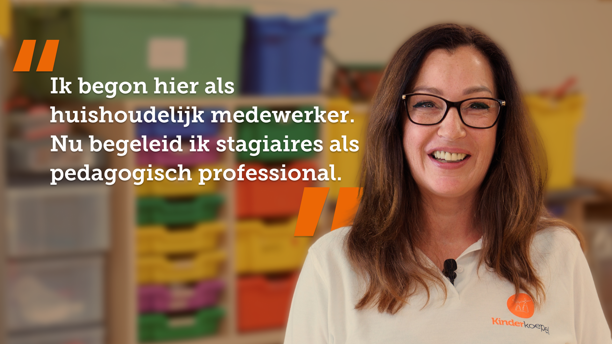
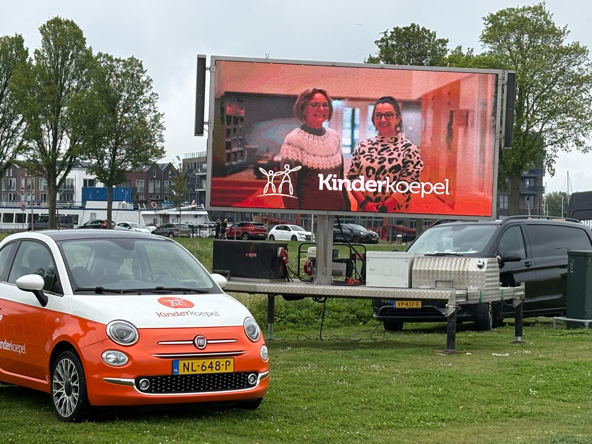

Kinderkoepel · Kinderopvang / maatschappelijke organisatie · 2026
Kinderkoepel zocht nieuwe collega’s voor de BSO. Geen standaard vacaturecampagne, maar een aanpak die twijfelende zij-instromers daadwerkelijk in beweging bracht.
Met lokale targeting, herkenbare verhalen en content die vertrouwen gaf, ontwikkelden we een recruitmentcampagne die niet voelde als reclame, maar als een eerlijke uitnodiging.
Kinderkoepel wilde meer sollicitaties genereren voor BSO-functies in de regio Hellevoetsluis. De focus lag op pedagogisch medewerkers, zij-instromers, 40-plussers en mensen zonder directe kinderopvangachtergrond.
Het echte probleem zat dieper: deze doelgroep zag zichzelf niet terug in traditionele recruitmentcommunicatie. Veel campagnes in de kinderopvang voelen generiek, corporate, jong of te vacature-achtig. Daardoor ontstaat geen emotionele herkenning.
Terwijl deze doelgroep eerst iets anders wil weten: durf ik dit nog, pas ik tussen jonge collega’s, ben ik niet te oud, kan ik dit combineren met mijn leven en mag ik überhaupt nog iets nieuws beginnen?
Het belangrijkste inzicht: mensen solliciteren niet direct op een vacature. Ze solliciteren eerst mentaal op een nieuw leven.
Daarom maakten we geen gladde employer-brandingfilm, maar een lokale campagne rondom echte medewerkers, echte uitspraken en echte onzekerheden. De boodschap: je hoeft niet perfect in het plaatje te passen om hier te beginnen.

Medewerkerverhaal
Offline activatie Interviews
Interviews
 Werken-bij pagina
Werken-bij pagina
“Naast fantastische resultaten in de vorm van sollicitaties, hebben we ook een enorm goede awarenesscampagne gedraaid als bijvangst. Dankzij de tactiek van De BeeldBrekers!”
Majella Jurgens, communicatie/marketingmanager bij Kinderkoepel
De campagne gaf Kinderkoepel content die menselijk voelde, lokaal relevant was, direct herkenning opriep en makkelijk inzetbaar was op social media.
Met een relatief beperkt advertentiebudget werden sollicitaties direct herleid via Google Analytics, sterke lokale zichtbaarheid opgebouwd en waardevolle retargeting-doelgroepen verzameld voor verdere optimalisatie.
Wel content die mensen daadwerkelijk in beweging brengt. Laten we een recruitmentcampagne bouwen die binnenkomt.
Plan een kennismaking!